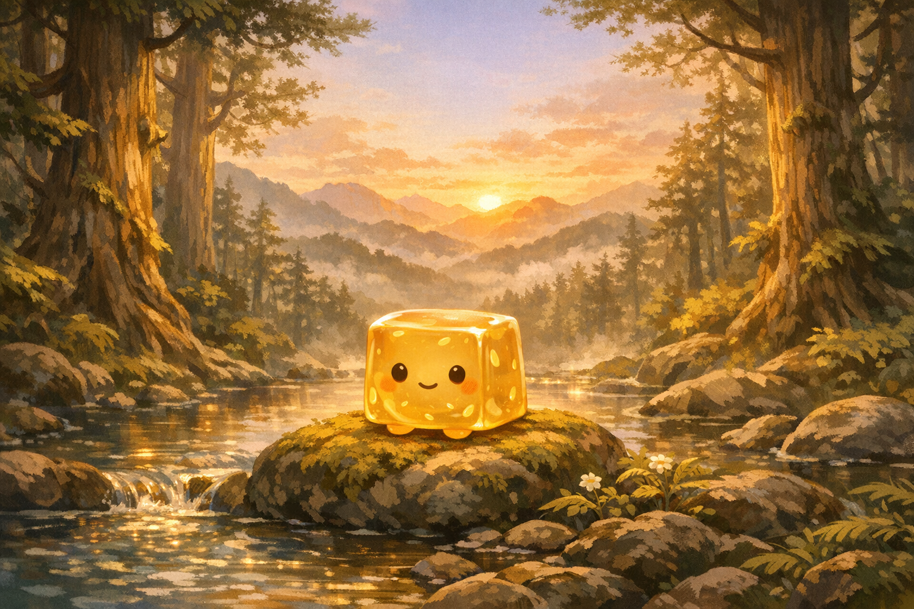
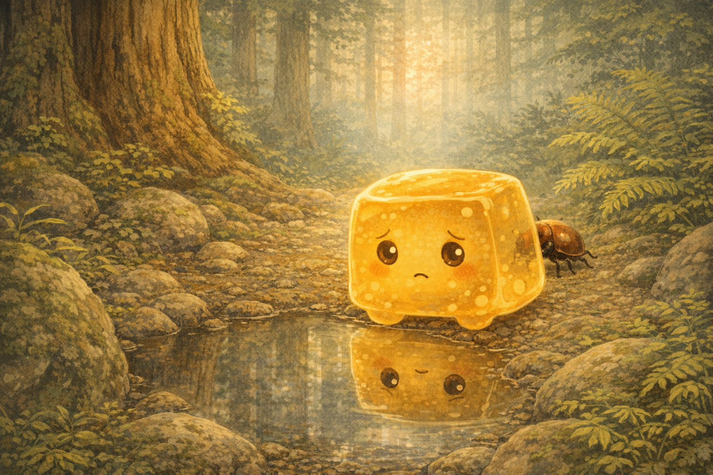
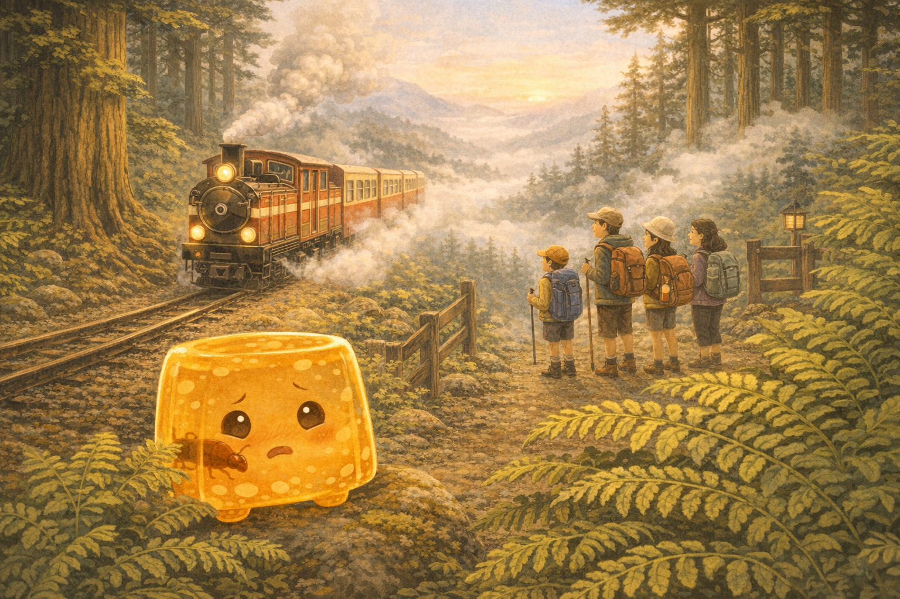
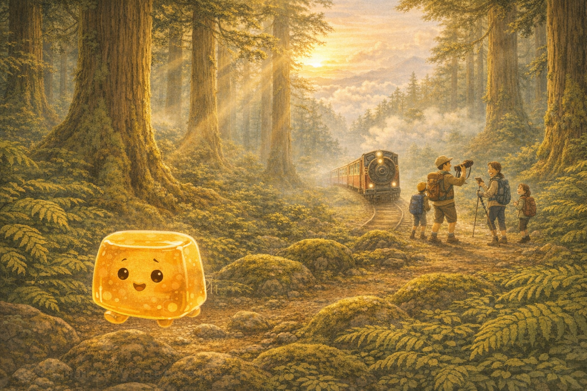
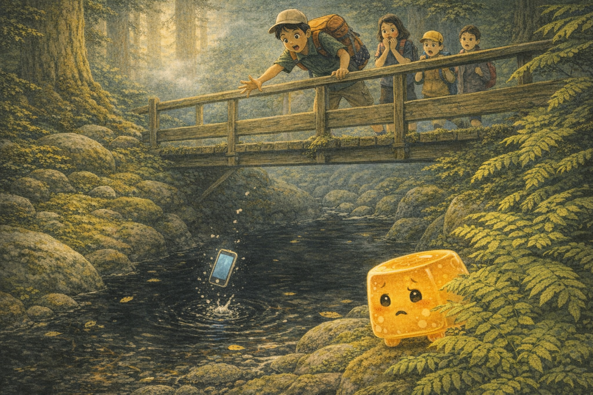
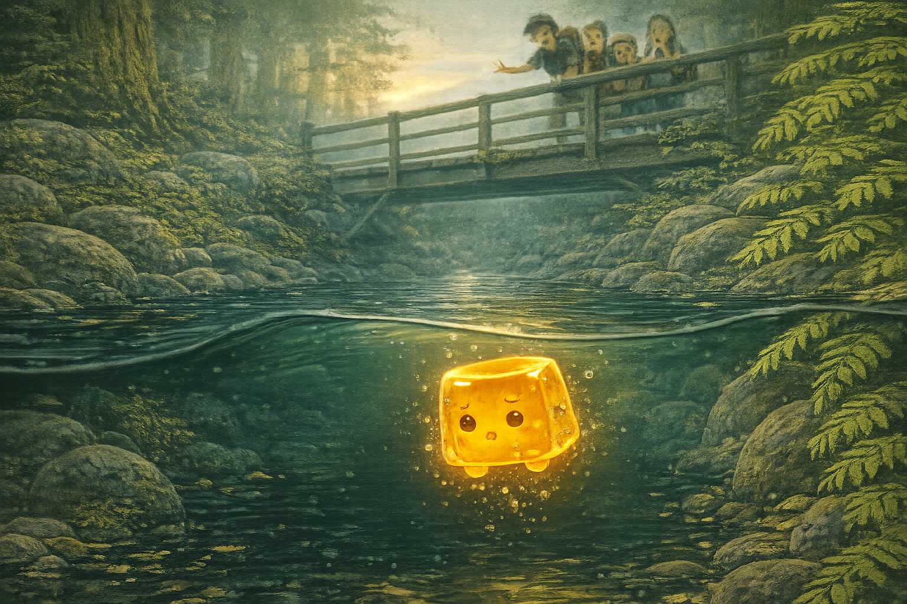
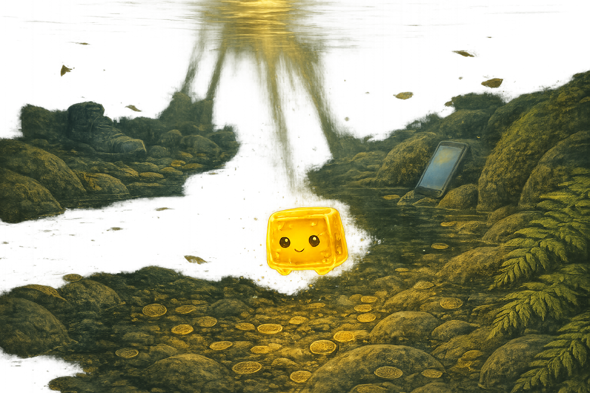
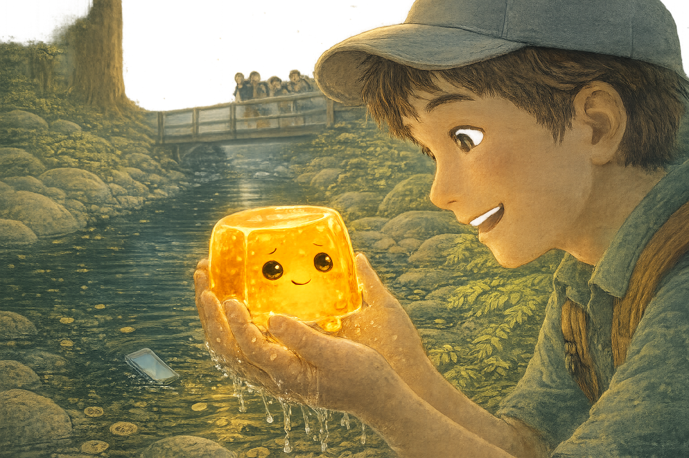
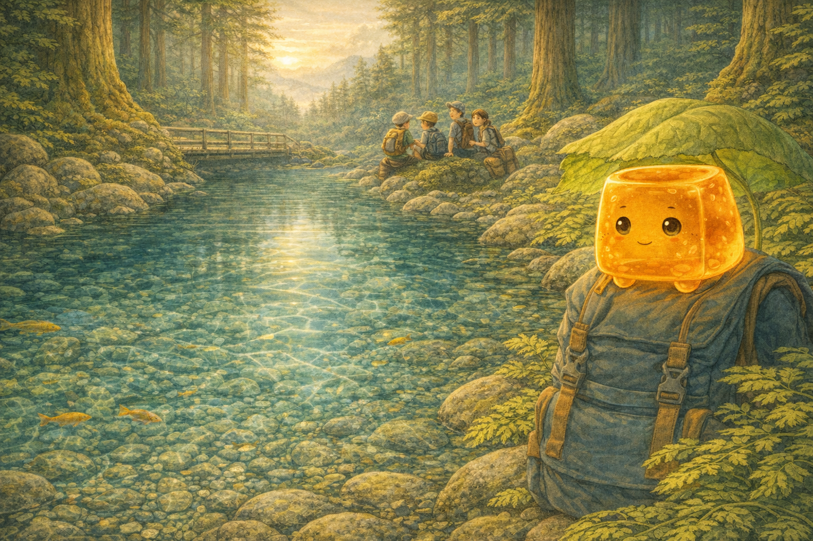
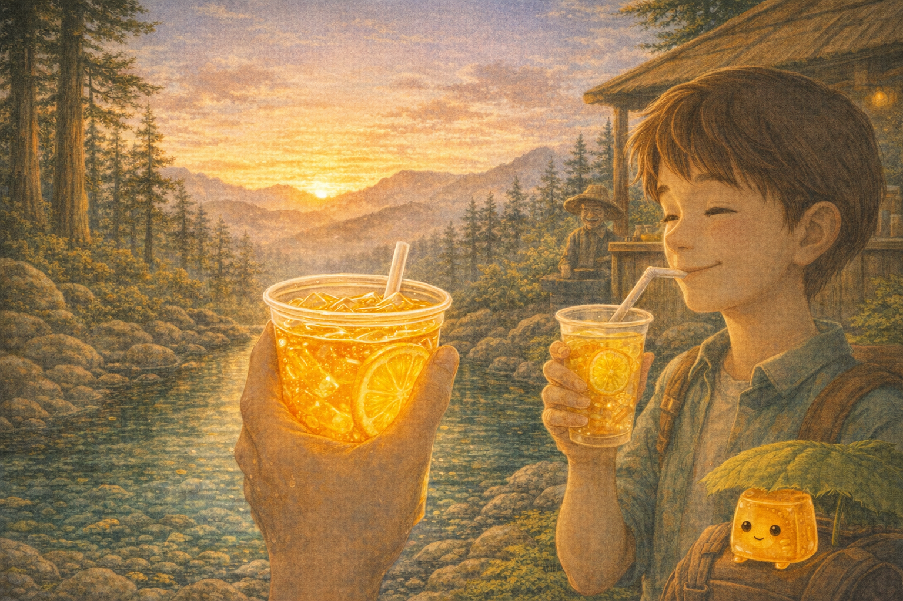

Story 03
Aiyu and the Mountain Spring
In misty 阿里山 (Ālǐshān), a shy jelly learns that being clear can be a kind of courage.
Mandarin Spotlight: 愛玉 (àiyù) = aiyu jelly

The See-Through Problem
Aiyu was a pale golden cube of jelly, soft and wobbly and full of tiny lemon-seed freckles. She was also translucent, which meant everyone could see right through her.
Beside a puddle on Alishan, she sighed, “There is a beetle behind me, and I can count its legs through my stomach.”

The Mountain Visitors
One morning, a hiking group arrived on the Alishan Forest Railway. Their guide, Mr. Chén, called, “來來來!” (lái lái lái), “Come, come, come!”
He promised to lead them to a sacred spring, where the water was so pure it showed everything exactly as it was. Aiyu peeked out, suddenly interested.

Along the Cypress Trail
Curious Aiyu jiggled after the hikers, hopping from rock to rock with very little dignity and very good speed.
The trail wound through cypress trees wrapped in moss. Sunlight fell in golden beams, and Aiyu wondered if clear things might belong in a clear place after all.

The Liar’s Pool
At a narrow wooden bridge, a boy named Wèi leaned over to take a picture. His phone slipped, bounced from a rock, and vanished into a dark pool.
“不好意思,” (bù hǎo yìsi) Mr. Chén said softly. “Sorry.” The water hid everything it swallowed, and Wèi’s face fell.

A Brave Little Plop
Wèi tried not to cry. Aiyu felt her jelly heart squeeze. She could help, but only by doing the thing she hated most: being seen through.
“Your name means love jade,” she whispered to herself. Then she plopped into the cold mountain water.

The Living Lens
The pool was dark, but Aiyu was clear. Light slipped through her amber body, bounced from the bottom, and returned through her like a tiny lantern.
She saw coins, leaves, an old blue boot, and there, wedged between two rocks, Wèi’s phone.

Up From the Water
Hugging the phone with wobbly arms, Aiyu rose to the surface and held it high like a trophy.
“太棒了!” (tài bàng le) Wèi shouted. “Awesome!” The phone still glowed, and his homework was saved.

What You See
Wèi held Aiyu gently and asked how she had found the phone. Aiyu jiggled. “I can see through things. I am transparent. What you see is what you get.”
Wèi grinned. “That is the coolest thing ever.” For the first time, Aiyu wondered if being clear had never been a problem at all.

The Honest Spring
At last, the hikers reached the Sacred Spring. The water was so clear that every pebble, fish, and ribbon of light could be seen.
Mr. Chén said the spring was sacred because it had no secrets. Wèi smiled at Aiyu, still glowing on his backpack. “Just like aiyu jelly.”

Lemon, Honey, Mountains
At the refreshment stand, fresh 愛玉 (àiyù) shimmered in clear cups with lemon and honey. Aiyu looked at the golden jelly, then at the spring, and understood: she did not need to hide from being clear.
She slipped into one cool cup and let herself become part of the sweet mountain drink, transparent, honest, and refreshing. Wèi took a sip and whispered, “It tastes like honesty.” And perhaps it did: lemon, honey, mountains, and a heart completely clear.
Goodnight, little one. May you be brave enough to be clear and true. The things that make you different may be the very things that help the world see your light.